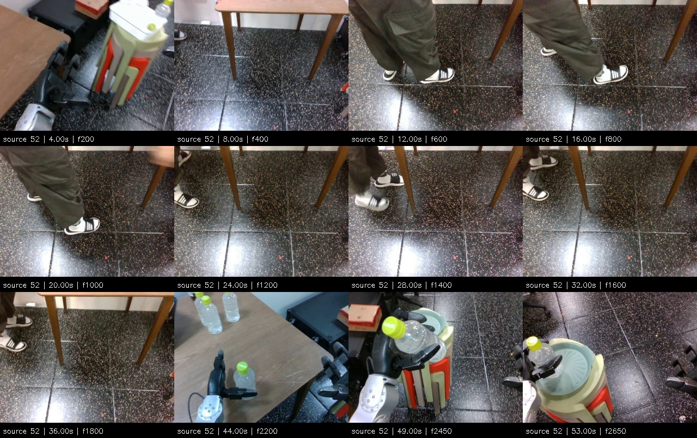
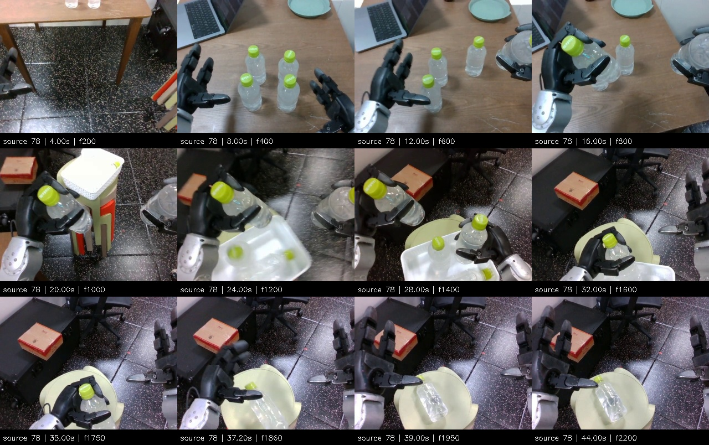
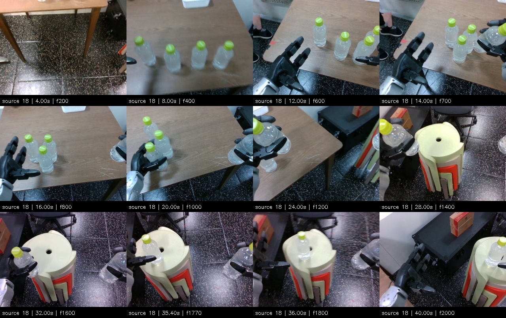
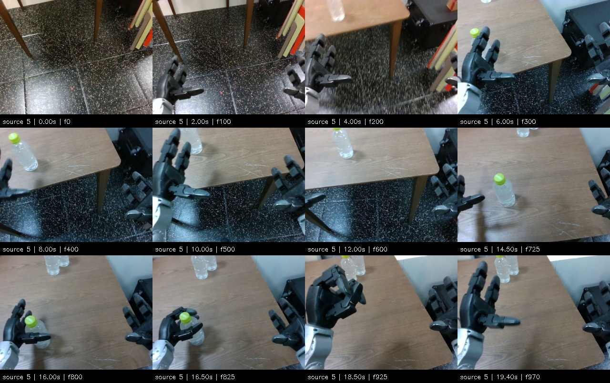

Source 52: hold candidate
Whole-source split: review_needed. Original frames 0–2749; 50 fps. Candidate segment cuts remain unaccepted.
Sampled contact sheet

These are real recorded demonstrations, not simulated executions of new skills. Find an empty-hand start and a steady held-bottle finish above the source table for picking; placement starts from that held pose and finishes after release on the stool. Require at least two seconds of stable terminal behavior. Source 5 and 18 stay reserved for evaluation of a future checkpoint.
The user confirmed that picking must stop above the source table. Source 52's late hold near the stool does not qualify as that finish. Source 78 is a placement candidate. Neither has accepted subskill labels. Use frame stepping while paused and check the full recording before accepting boundaries.
Whole-source split: review_needed. Original frames 0–2749; 50 fps. Candidate segment cuts remain unaccepted.

Whole-source split: review_needed. Original frames 0–2299; 50 fps. Candidate segment cuts remain unaccepted.

Whole-source split: held_out. Original frames 0–2023; 50 fps. Candidate segment cuts remain unaccepted.

Whole-source split: held_out. Original frames 0–976; 50 fps. Candidate segment cuts remain unaccepted.
